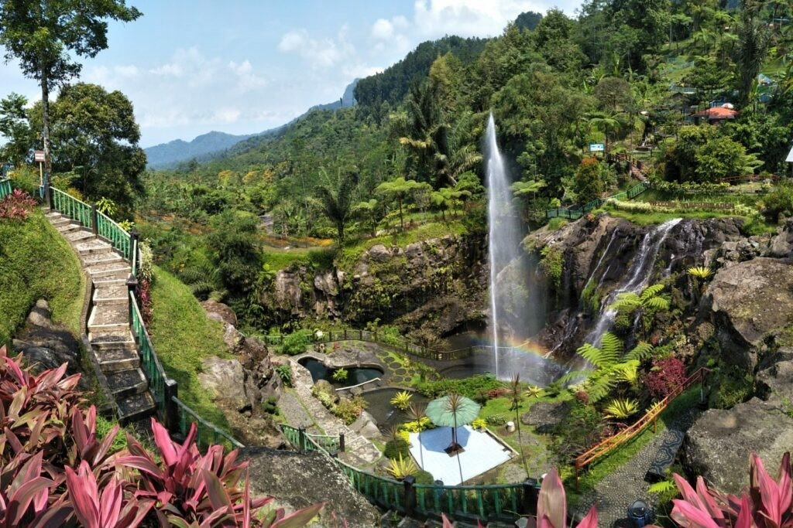
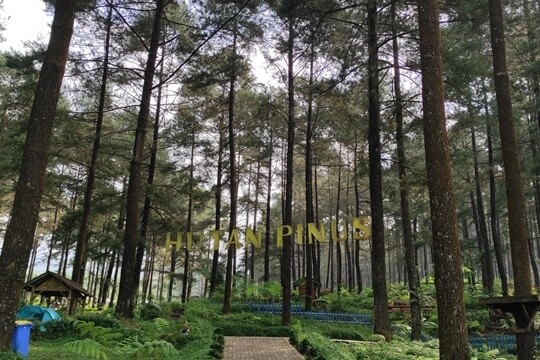
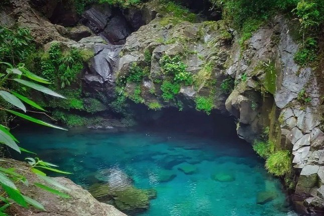
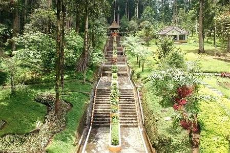

Tourism





Purwokerto has a number of tourist attractions that can be visited, both educational and natural tourism. One of the most recognized tourist destinations by tourists is Baturraden. Baturraden itself is an area located north of the city of Purwokerto, precisely on the southern slopes Mount Slamet. The location is also quite close to the city center of Purwokerto, only around 15 KM and occupies an altitude of 640-750 meters above sea level.
The name Baturraden comes from a fairy tale that has developed in society. A king's son ("raden") who loves a maid ("batur"). However, his parents disapproved, and he ended his life in a place now called "Baturraden".
The geographical position of the Baturraden tourism site makes this tourist destination connected to other tourist destinations, such as Bukit Bintang, Limpakuwus Pine Forest, Telaga Sunyi, Baturraden Botanical Gardens, and Mount Slamet. Tourists can visit these destinations by foot, public transportation or by private vehicle.